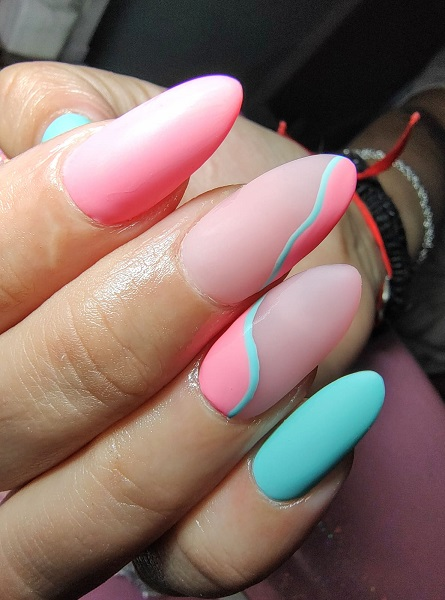

Un servicio estrategicamente pensado para que puedas tener tus manos impecables, siempre!
En Pri Nails sabemos que las uñas son todo para vos! Amamos completar tu estilo y compartimos la sensación de felicidad que sentís cuando mirás tus manos y las ves perfectas, porque entendemos la seguridad que te transmite tu propia imagen en ese momento 🤍
